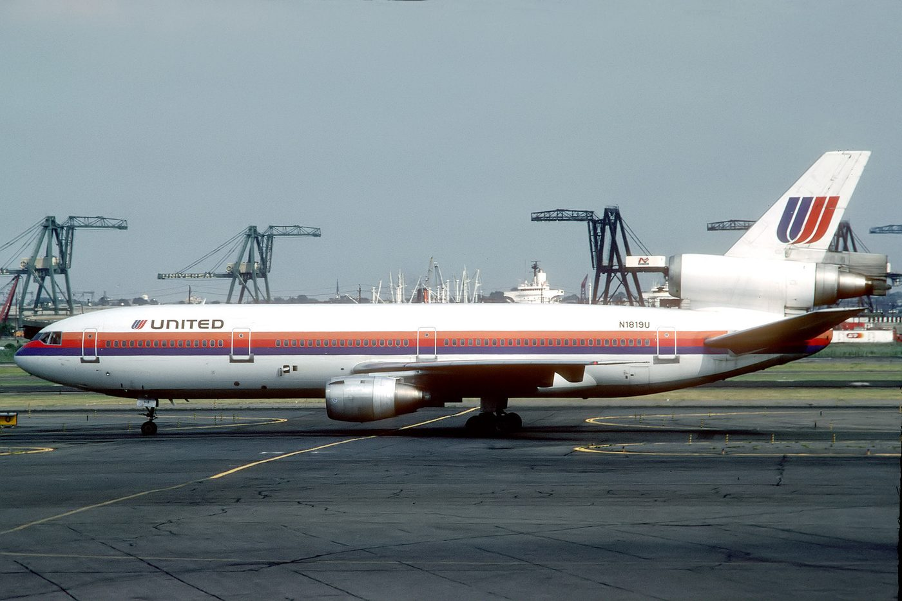
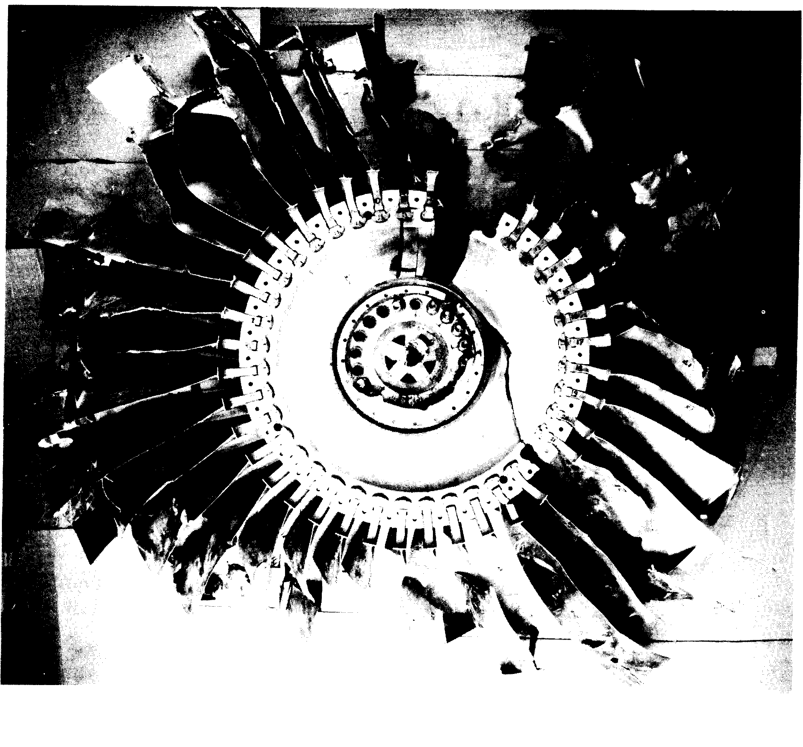
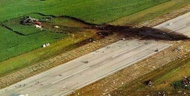

On July 19, 1989, cruising at 37,000 feet over Iowa, the tail-mounted engine of a United Airlines DC-10 disintegrated and sprayed shrapnel through all three of the aircraft's independent hydraulic systems at once, a failure mode the jet's designers had calculated was virtually impossible. Captain Al Haynes and his crew were left with no ailerons, no elevators and no rudder: nothing but the throttles of the two remaining engines. An off-duty training pilot rode in coach that day, and a jump seat became one more crew station. Together, using a technique nobody had ever practiced, they brought a 350,000-pound airliner with no flight controls down onto a runway that had been closed for a year. Of 296 people aboard, 184 survived what investigators later concluded should not have been a survivable landing at all.
All times in this case file are Central Daylight Time, July 19, 1989. United Airlines Flight 232 left Denver's Stapleton International Airport at 14:09, a McDonnell Douglas DC-10 bound for Chicago and then on to Philadelphia, an ordinary midsummer trip.

In command was Captain Alfred C. “Al” Haynes, 57, an exceptionally experienced pilot with nearly 30,000 flight hours, over 7,000 of them on the DC-10. First Officer William Records, 48, and Flight Engineer Dudley Dvorak, 51, completed the flight deck crew. Eight flight attendants worked a cabin carrying 285 passengers, many of them families traveling under a “Children's Day” promotional fare; 296 people were aboard in total.
Among the passengers, seated in coach, was Dennis “Denny” Fitch, 46, a United DC-10 training check airman flying that day simply as a passenger, on his way to a work assignment. Nothing about the flight up to that point had given anyone aboard reason to notice him.
At 15:16, cruising at 37,000 feet, the fan disk inside the DC-10's tail-mounted General Electric CF6-6D engine, the No. 2 engine, disintegrated explosively.
The NTSB traced the failure to a microscopic manufacturing defect in the titanium alloy of the fan disk itself: a “hard alpha inclusion,” a brittle pocket created by nitrogen contamination during the metal's original processing, present since the disk was forged in 1971. Over 18 years and more than 42,000 operating hours, a fatigue crack grew from that hidden flaw with every engine cycle, undetected through multiple inspections, until it finally gave way.
Shrapnel from the disintegrating fan disk sprayed outward with enough force and in a wide enough pattern to sever all three of the DC-10's fully independent hydraulic systems, the No. 2 system directly, and the No. 1 and No. 3 lines where they ran through the horizontal stabilizer. The aircraft's designers had built in triple redundancy specifically to make this exact scenario, described afterward as roughly a one-in-a-billion event, essentially impossible.
Within minutes, hydraulic pressure in all three systems fell to zero. Every conventional flight control on the aircraft, the ailerons, the elevators, the rudder, went dead at once.
First Officer Records pulled back on the control column. Nothing happened. The DC-10 had no hydraulic pressure left to move a single flight surface.
Flight Engineer Dvorak shut off fuel to the destroyed tail engine on his own initiative. With no ailerons, elevators or rudder responding at all, the crew's only remaining lever over the aircraft's attitude was the two wing-mounted engines still running, and the DC-10 had never been designed to be flown that way. Haynes began experimenting: reducing power on the left engine, increasing it on the right, discovering by trial that the crude, laggy response of differential thrust could roughly, imprecisely, influence the aircraft's roll and pitch.
It was nowhere near enough to fly a normal approach. The aircraft entered a persistent, slow, right-leaning phugoid oscillation, nosing up, then down, then up again, that the crew could dampen but never fully stop.
United Airlines Flight 232
Three pilots with 103 years of combined flying experience, none of it in an aircraft like this.
Senior flight attendant Jan Brown relayed a message to the flight deck: a passenger in coach, a United DC-10 training captain, was offering to help.

Dennis Fitch made his way to the cockpit and, watching through the windows, confirmed what the instruments already suggested: the control surfaces simply weren't moving, no matter what input the pilots gave. Haynes, still flying the aircraft from his own seat, asked Fitch to take over the throttles entirely, freeing Haynes to focus on everything else. Fitch knelt in the narrow space between the two pilot seats and worked both engine throttles by hand, one in each fist, translating what the crew wanted the aircraft to do into tiny, constant adjustments in engine power.
It was a technique nobody aboard had trained for, because nobody had ever needed to: flying a wide-body jet, in real time, using only two throttle levers as flight controls.
Nah, I can't pull 'em off or we'll lose it, that's what's turning ya.
— Dennis Fitch, cockpit voice recorder, working the throttles on final approachWith almost no ability to choose a heading precisely, the crew needed somewhere to land that they could actually reach. Sioux Gateway Airport, Iowa, happened to be close.
Sioux City Approach: “United Two Thirty-Two Heavy, the wind's currently three six zero at one one. You're cleared to land on any runway.”
Captain Haynes: “[laughter] Roger. [laughter] You want to be particular and make it a runway, huh?”
The exchange, dark gallows humor from a crew that knew exactly how little control they actually had, became one of the most quoted moments in the entire case. The aircraft could really only turn right; every course correction the crew managed came from a long series of right-hand turns. The original target, a 9,000-foot runway, proved impossible to line up for. Instead, the crew aimed for Runway 22, just 6,888 feet long and closed to traffic for the past year, the only alignment differential thrust alone could achieve. Fire crews scrambled to clear it in the minutes before touchdown. Haynes's only real instruction to Sioux City's controllers was simple: “Whatever you do, keep us away from the city.”
On final approach, the aircraft was coming in far too fast and far too steep for any normal landing, 220 knots against a safe target of about 140, sinking at over six times the normal rate, with no flaps and no way to slow down further.

Moments before landing, the aircraft's persistent right-hand roll worsened sharply and the nose dropped. Fitch pushed both throttles to full power in one last attempt to level the wings. It wasn't enough. The right wingtip struck the runway first, rupturing fuel tanks that ignited immediately. The tail section broke away. The aircraft bounced, shedding landing gear and engine parts, then the fuselage broke apart, the right wing tore off, and the main section skidded off the runway, rolled onto its back, and came to rest upside down in a cornfield beside the runway, engulfed in fire.
Left, left throttle, left, left, left, left, left, left, left, left, left, left, left!
— Captain Al Haynes, cockpit voice recorder, seconds before impact, followed by the ground proximity warning system's final “pull up” and Haynes's last order: “Everybody stay in brace!”Of the 296 people aboard, 111 died in the crash itself; one more passenger died in hospital roughly a month later from her injuries, bringing the eventual toll to 112. 184 people survived, all four flight crew members among them.
Roughly a third of the deaths came from smoke inhalation in the post-crash fire; the rest from blunt-force trauma in the impact itself. None of the smoke-inhalation deaths occurred in first class, where the structural section held together comparatively well.
NTSB investigators had experienced United and McDonnell Douglas test pilots attempt to replicate the landing afterward, in simulators, under identical conditions. None could produce a survivable outcome. The Board's own conclusion: a safe landing was “virtually impossible,” and Flight 232's crew “greatly exceeded reasonable expectations.”
Fifty-two children were aboard that day, including four traveling as unticketed “lap children” on a parent's lap rather than in their own seat, under the airline's promotional fare. Eleven children died, including one lap child, a fact that would go on to shape decades of advocacy for mandatory child safety seats on aircraft, championed afterward by senior flight attendant Jan Brown, though the FAA has never adopted the requirement.
Every fact in this case file was cross-referenced against at least two independent sources, anchored by the official NTSB investigation. All links open in a new tab.
The National Transportation Safety Board's complete final report on the accident.
Independent aviation accident database entry archiving the official report's findings.
Official U.S. federal registration record for the accident aircraft.
A detailed retrospective on Captain Haynes and the crew's actions, published on the accident's 20th anniversary.
Used as a secondary cross-reference for names, figures and the sequence of events; every fact drawn from it was checked against a primary or independent source above.